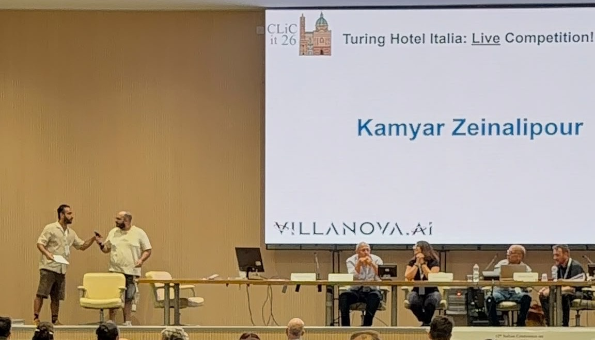
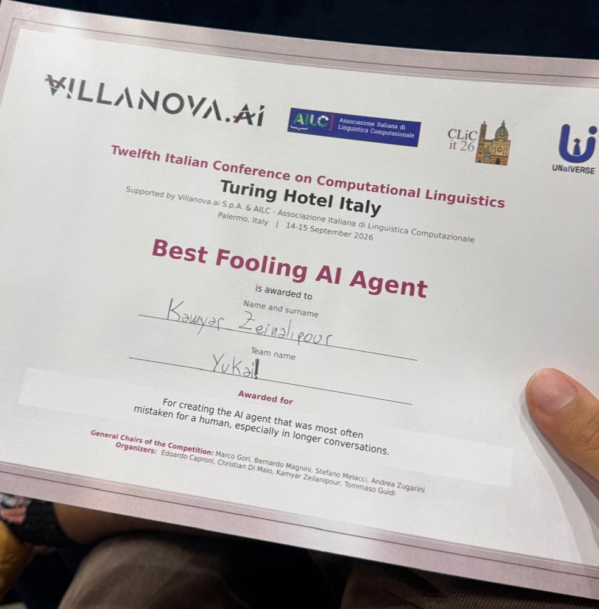

I finished my Ph.D. at the University of Siena in February 2026, supervised by Marco Gori, and stayed on at DIISM as a postdoctoral researcher with Marco Gori and Marco Maggini. Before Siena I studied applied mathematics here and applied statistics at the University of Hormozgan, which is where the habit of checking a claim against data comes from.
Alongside the postdoc I am an AI engineer at Villanova.AI, where I built the instruction-tuning data behind the open Villanova models, and a generative AI engineer at YUKAI! in Siena. I also run Tildea, which writes a resume for a specific job from what you have really done and leaves out the rest.
I have spent stretches as a visiting researcher at the University of Massachusetts Amherst, at Inria in Nice and at the University of Gothenburg, and I have supervised ten master's theses at Siena.
If you want to collaborate on educational NLP, on a language that needs resources, or on evaluation that goes past a leaderboard, write to me.
Awards


Service
Reviewing, chairing and organising for the communities the work belongs to.
since 2024
Area chair, then reviewer, ACL Rolling Review
Area chair in the March cycle; a reviewer since then.
Sep 2026
Co-organiser, Turing Hotel, CLiC-it 2026, Palermo
A live, multi-party Turing test in Italian, built on UNaIVERSE: people and artificial agents at one table, each trying to tell the other apart.
Oct 2025
Publicity co-chair, AIML Systems 2025, Bengaluru
2024 and 2025
Program committee, BEA, the workshop on NLP for educational applications
2024 and 2025
Reviewer, AAAI
2024
Publicity and communication chair, CoLLAs 2024, Pisa
2024
Challenge co-proposer, ECWCA, CALAMITA at CLiC-it 2024
Talks
Seminars, invited talks and recorded conference talks. Papers presented at conferences are also listed on the updates page.
Sep 2026
Villanova-2B, poster with the Villanova.AI team, CLiC-it 2026, Palermo
Jun 2026
From Graph to Text and Back, ACL 2026, industry track
Dec 2025
FarSense, IJCNLP-AACL 2025
Feb 2025
Speaker, LT4All 2025, UNESCO Headquarters, Paris
Nov 2023
Applications of large language models in education, SAILab seminar, University of Siena
Feb 2023
Research directions, with Andrea Zugarini, TAILOR WebCrow workshop, CINI and Expert.ai
Path
Aug 2026 to now
Postdoctoral researcher, University of Siena, DIISM
Natural language processing for education and for languages with few resources, at SAILab with Marco Gori and Marco Maggini.
Nov 2025 to now
AI engineer, Villanova.AI, Cagliari
Open language models for Europe's languages, part of the IPCEI-CIS European AI programme. Built Villanova-SFT-2603, the 1.71-million-conversation instruction dataset for the first-generation Villanova models, worked on Villanova-2B-2603, and was part of the team behind Villanova2.
Nov 2025 to now
Generative AI engineer, YUKAI!, Siena
Fine-tuned models, retrieval pipelines and agentic systems for production, with a focus on educational and creative applications.
Nov 2022 to Feb 2026
Ph.D. in Information Engineering and Science, University of Siena
Thesis: From Language to Learning, an LLM-driven framework for multilingual educational content. Supervised by Marco Gori, reviewed by Hava Siegelmann and Hanan Salam, defended 10 February 2026 with the grade eccellente.
Apr to Jun 2025
Visiting researcher, University of Gothenburg
A multilingual study of plural nouns that have no singular, which became an EACL 2026 paper.
Feb to Apr 2025
Visiting researcher, Inria, Nice
Built the Detoxification Fidelity Index and a reinforcement learning pipeline for detoxification that preserves meaning.
Sep 2024 to Jan 2025
Visiting researcher, University of Massachusetts Amherst
Built a 22,000-pair human-verified dataset for detoxification that does not destroy the original meaning.
2021 to 2023
Data scientist, with Baker Hughes, University of Siena
Emission forecasting for gas turbines, deployed as a service, published at WIRN and AI-ML-Systems.
2017 to 2021
M.Sc. in Applied Mathematics (Data Science), University of Siena
Thesis on classifying ECG signals by turning time series into graphs, which became the ts2g package.
Sep 2013 to Jan 2017
B.Sc. in Applied Statistics, University of Hormozgan, Iran
Alongside it, statistician at Gilda Research and data analyst at the State Management and Planning Organization in Bandar Abbas.
Certificates and courses
2021
Mathematics for Machine Learning, specialization, Imperial College London
Courses: Linear Algebra, Multivariate Calculus, Principal Component Analysis.
2021
Deep Learning, specialization, DeepLearning.AI
2020
Machine Learning, Stanford University, Andrew Ng
2019
Python for Everybody, specialization, University of Michigan
Courses: Programming for Everybody, Python Data Structures, Using Python to Access Web Data, Using Databases with Python, Capstone.
2024
Graph Neural Networks, Ph.D. course with exam, University of Siena, Franco Scarselli